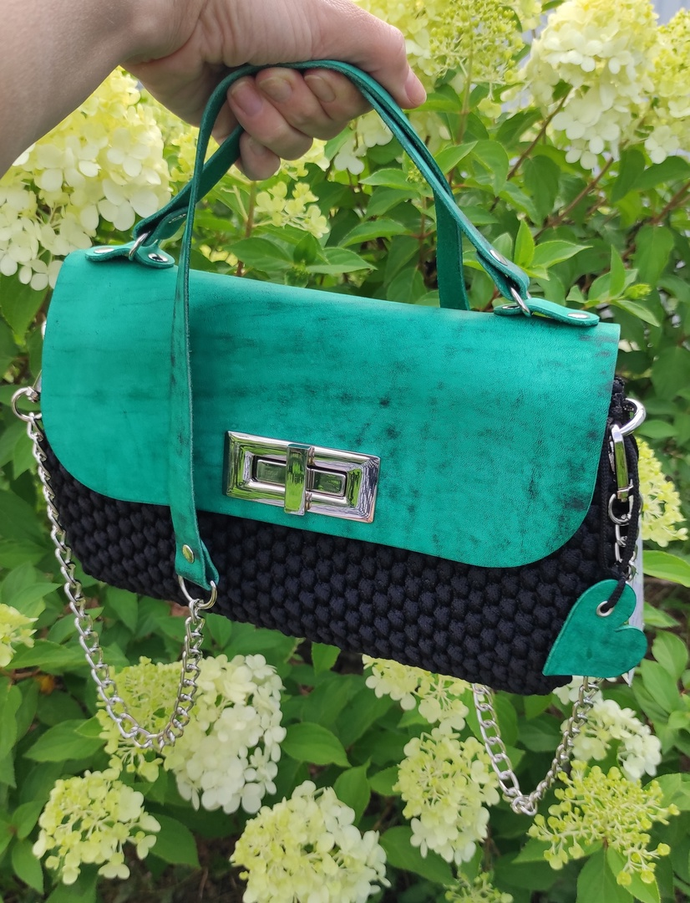
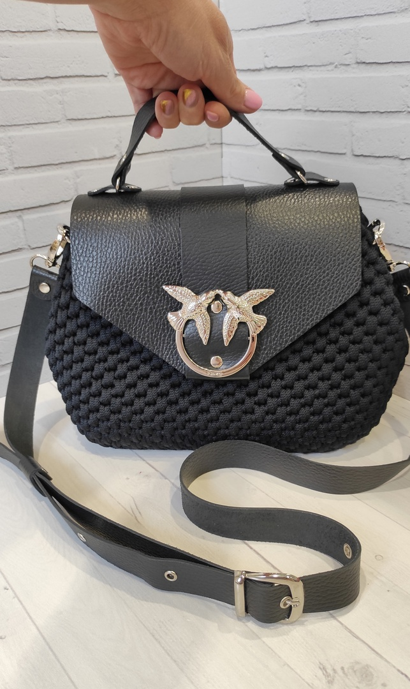
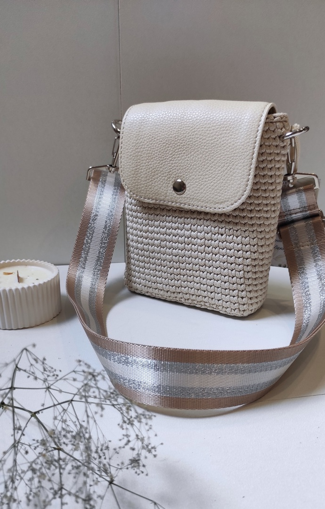
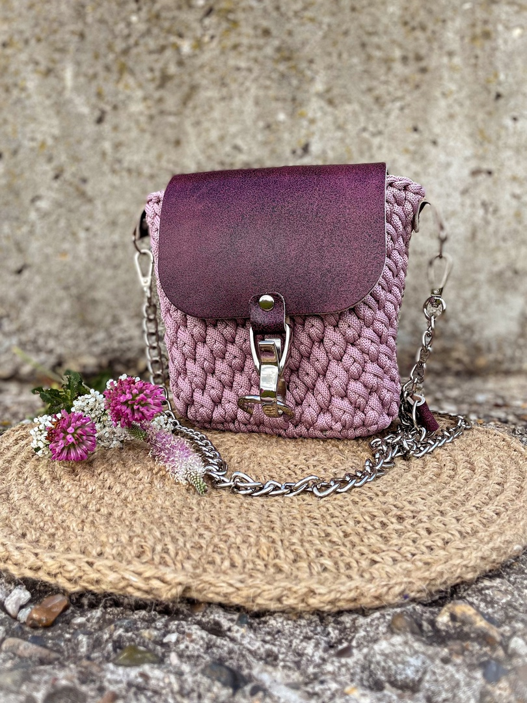

До курса продаж у Ирины Чагаевой, вязальщицы из Увы, почти не было. В лучшем случае 1 в месяц. Средний чек составлял 1400 рублей, клиенты были только среди знакомых.
После прохождения курса средний чек вырос до 2300 рублей, появились новые заказы и их стало 3 в месяц. По силам Ирины, так как у нее маленький ребенок и больше она брать не может.
— Расскажи, что было до курса, какой средний доход был в месяц? Сколько клиентов?
— Пришла на курс, потому что не совсем чётко представала, как начать продавать. До курса за 4 месяца я продала 3-4 своих изделия.
Заказы были только от родных и друзей.
— Какие сложности были во время обучения на нашем курсе? Насколько сложно было учиться? За сколько прошла обучение?
Сложности, конечно, были, потому что в настройках группы ВКонтакте я раньше совсем не разбиралась. Делала всё сама пошагово по урокам. Если что-то не получалось с первого раза, перечитывала, пересматривала материал снова. В итоге всё сделала сама. Скажу, что я гуманитарий. Технические (особенно компьтерные) настройки и прочее – вообще не моё.
Но я справилась!

К тому же, если возникали вопросы, их можно было всегда задать в чате. Прошла обучение за месяц. График был такой: 1 урок в день.
Самое главное, что уроки остаются и я могу ещё раз их пересмотреть. Сейчас уже мне многое хочется поменять в группе (концепцию развития).
— Ты ведь без куратора проходила? А как думаешь, с куратором было бы легче?
— Да, без куратора. Думаю, не легче, а основательнее. У кураторов есть хороший опыт в продажах, успешно развивающееся ремесло. Они помогут с целевой аудиторией, концепцией группы, постами. То есть с самой сутью.

Это намного важнее, чем просто сделать настройки. Их грамотно сделать можно и самому. Но вот определить то самое зерно, то важное, что нужно клиенту/заказчику, гораздо сложнее. В этом поможет куратор.
— Какие сейчас действия делаешь для привлечения клиентов? Как часто пишешь посты? Запускаешь ли рекламу?
— Вот честно, мало что делаю. Посты пишу раз или 2 в неделю. Понимаю, что этого катастрофически мало. Делаю видео с процессом создания сумок.
Рекламу пока не запускала.

Вообще, понимаю, что для хороших продаж нужно полноценное свободное время, как в работе по найму. А сейчас у меня нет такой возможности, потому что с ребёнком дома мало что можно успеть.
Но я пытаюсь, как могу)
— А можешь поделиться, как изменилась жизнь, когда увеличился доход? Может что-то купила себе? Съездила в путешествие? Что-то смогла сделать, чего раньше не могла позволить себе?)
— Оооой, да ничего и не изменилось. Разве что хожу на маникюр каждый месяц, но и это приятно)
Пока вся прибыль уходит на закупку материалов. Если только считать, что теперь из 3 мотков шнура у меня их стало 30)

О каких-то масштабных продажах говорить рано) Но очень радует, что они есть!
Уже в с первых уроков поступила пара заказов (после приветственного поста). Свою первую сумку продала за 2600 рублей. Сейчас цену подняла примерно в 1,5 раза. До обучения средний чек составлял 1400 рублей. После обучения – 2300 рублей.
— Ира, я рада, что появились регулярные продажи! Желаю тебе дальнейших успехов!